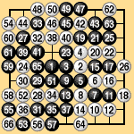
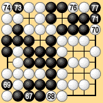
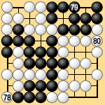
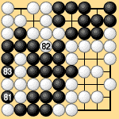
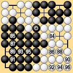
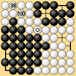

| 3.1 The Two Types of Area Rules |
|---|
|
The main concept of area rules is the right of stones to exist on the board. Area rules are significant in preserving the primitive, most basic form of go. Even in the study of territory rules, it is important to know how area rules are formulated, and what light they shed on various rules problems. The basic principle of area rules is to compare the number of black and white stones that can exist on the board. The player who can put more stones on the board wins. The rules of capture and ko are exactly the same as in territory rules. The main differences from territory rules are the following:
The present ko rule, however, is inadequate. If it is not generalized, problems can occur at the end of the game. This is an important issue regarding all types of rules, not just area rules, so we will discuss it in more detail later. According to rules that follow the principle of the right of stones to exist, the final end of a game occurs when the game is continued to the state shown in Dia. 3-1-5. The game in Dias. 3-1-1 to 3-1-5 was played on a nine-by-nine board by Go Seigen (9 dan) and Miyamoto Naoki (then 8 dan). Under Japanese rules the game ends at move 80, but Black has to add stones at 81 and 83 before counting, so Black wins by four points. Under area rules, note that:
|
|  |  |  | ||
| Dia. 3-1-1 (1-66) |
|
|
||
|---|---|---|---|---|
|  |  | |||
|
|
|
Note also that under area rules, Black wins by five points. Another point to note is that if the circled black stone in Dia. 3-1-5 were replaced with a white stone as in Dia. 3-1-6, then White could play additional stones at 98 and 100, increasing the number of white stones on the board by two. That is, the circled black stone in Dia. 3-1-5 has a value of two points in separating White's groups. In these area rules there is a bonus for cutting. A point that would connect both sides' groups is worth four points. |
|  | |
|
| There is a second type of area rules that compares both the number of stones and the number of eyes at the end of the game. These rules do have any cutting bonus. Under these rules it is possible to stop playing after Dia. 3-1-4, count stones plus territory, and get the same result as after 96 in Dia. 3-1-5. |